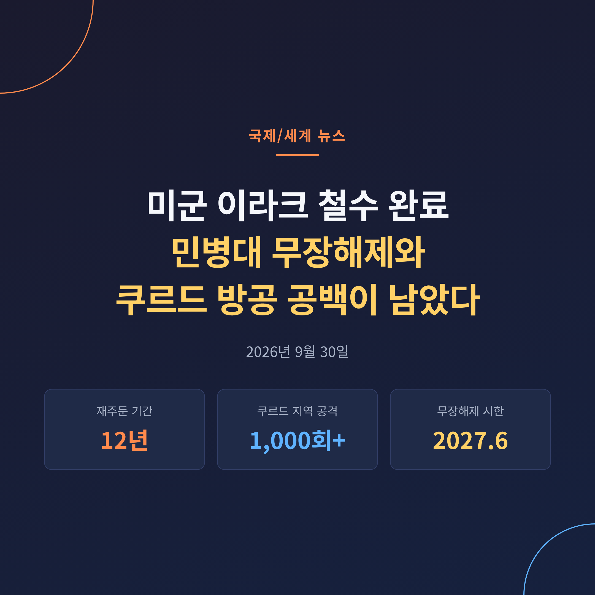
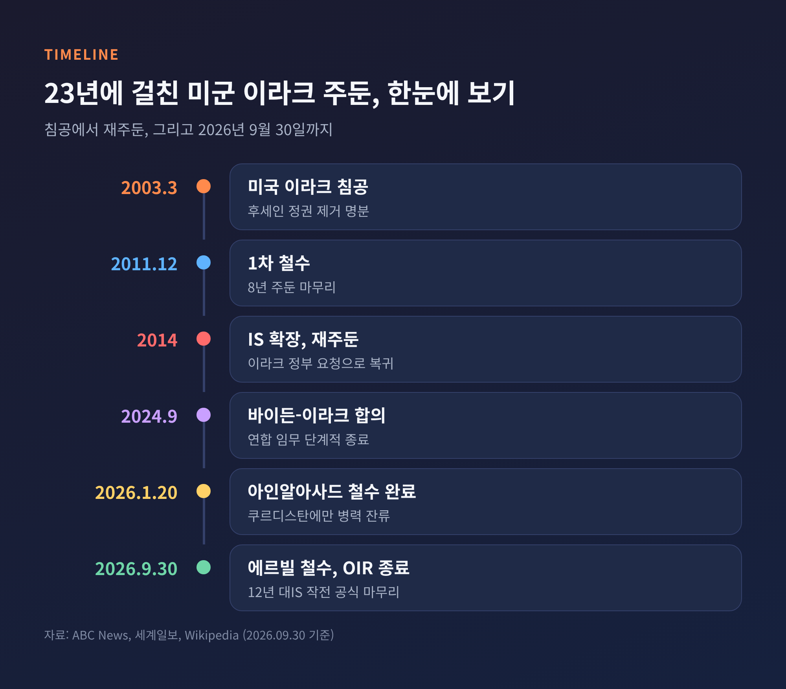
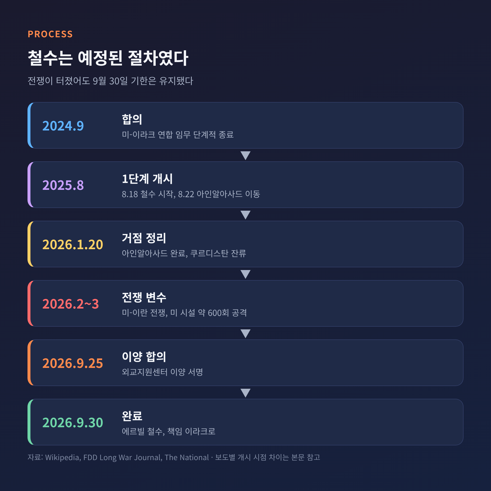
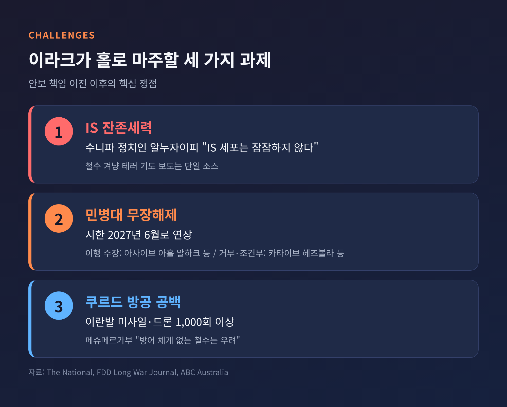
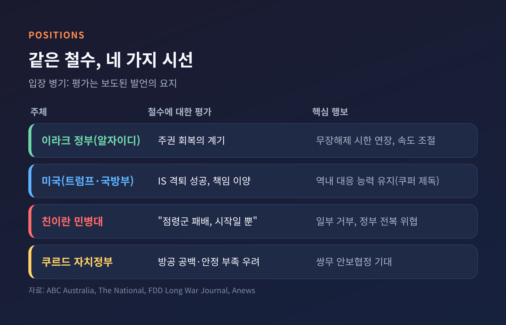
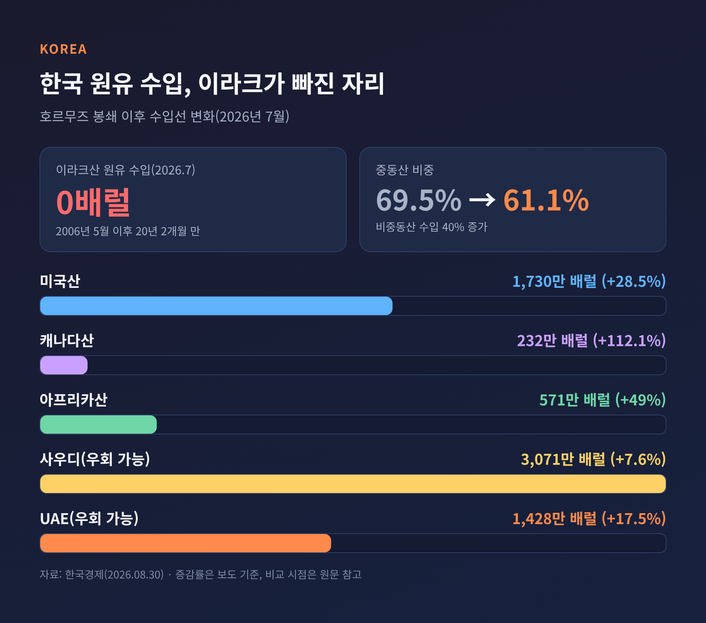

미군 이라크 철수 완료, 민병대 무장해제와 쿠르드 방공 공백이 남은 과제

오늘은 2026년 9월 30일 마무리된 미군의 이라크 철수를 정리해 보려 합니다. 무슨 일이 있었는지, 이라크 안보를 누가 맡게 되는지, 미국과 이란의 갈등 속에서 어떤 의미를 갖는지 차례로 살펴보겠습니다. 한국에 미치는 영향도 함께 짚습니다.
세 줄 요약
- 미 국방부는 9월 30일(현지시간) 에르빌 공군기지에서 마지막 병력이 빠져나가며 '연합 결의 작전'이 끝났다고 밝혔습니다.
- 안보의 일차적 책임은 이라크 정부로 넘어갔지만, 친이란 민병대 무장해제와 쿠르드 지역 방공은 풀리지 않은 숙제입니다.
- 한국은 이미 호르무즈 봉쇄로 이라크산 원유 수입이 끊긴 상황이어서, 철수 자체보다 이라크의 안정 여부가 중장기 변수입니다.
■ 무슨 일이 있었나: 에르빌에서 닫힌 12년
미 국방부는 9월 30일 이라크 주둔 마지막 병력과 장비가 북부 쿠르디스탄 에르빌 공군기지에서 철수를 마쳤다고 발표했습니다. 국방부 대변인 숀 파넬은 이를 "IS를 조직된 군사 위협으로서 격퇴한 12년 캠페인의 성공을 반영하는 이정표"라고 설명했습니다. 전시 연합 임무가 이라크 주도의 안보 노력으로 바뀐다는 설명도 덧붙였습니다.
이라크 총리 알리 알자이디는 이번 철수를 "이라크의 주권으로 규정되는 새로운 국면"의 시작이라고 평가했습니다. 총리실은 "9월 30일 이후 이라크 어디에도 외국군은 단 한 명도 남지 않을 것"이라고 밝혔고, 정부는 9월 30일부터 10월 2일까지를 '주권의 날'로 선포했습니다.
도널드 트럼프 대통령은 "미국의 승리이자 이라크의 승리"라고 말했습니다. 소셜미디어에는 "우리는 칼리프제와 싸우러 갔고 이제 칼리프제는 없다. 집으로 간다"고 적었습니다.
역사로 보면 이렇습니다. 미국은 2003년 3월 이라크를 침공했고, 2011년 12월 한 차례 철수했습니다. 2014년 IS가 세력을 넓히자 이라크 정부의 요청으로 돌아왔습니다. 침공 기준으로 23년, 재주둔 기준으로 12년 만의 마무리입니다. 이라크전에서 숨진 미군은 약 4,500명으로 집계됩니다. 수년간 이라크에는 약 2,500명이 머물렀습니다.

■ 철수는 어떻게 진행됐나
이번 철수는 갑자기 결정된 일이 아닙니다. 바이든 행정부가 2024년 9월 이라크와 연합군 임무를 단계적으로 끝내기로 합의했고, 트럼프 행정부가 이를 마무리했습니다. 2025년 8월 18일 철수가 공식 시작됐고, 같은 달 22일 아인알아사드 기지에서 병력이 움직이기 시작했습니다. 2026년 1월 20일에는 이 기지 철수가 끝나 이라크가 연방 영토 내 미군 철수를 선언했습니다. 다만 쿠르디스탄에는 병력이 남았습니다. 보도에 따라 철수 시작 시점을 2025년 8월 또는 10월로 달리 적기도 해, 이 글에서는 2025년 하반기로 보겠습니다.
변수는 2026년 2월 28일 시작된 미-이란 전쟁이었습니다. 이후 이란이 후원하는 이라크 무장세력이 이라크 내 미 시설을 약 600차례 공격했고, 쿠르디스탄 지역에는 이란발 미사일·드론 공격이 1,000회 넘게 이어졌습니다. 나토는 3월까지 이라크에서 병력을 뺐습니다. 7월 알자이디 총리가 워싱턴을 방문했을 때 9월 30일 기한이 다시 확인됐고, 9월 25일에는 외교지원센터 이양 합의가 서명됐습니다.
전쟁 속에서도 일정이 바뀌지 않았다는 점이 눈에 띕니다. 예전에는 철수가 '안보 공백'의 신호였다면, 이번에는 양국 모두 '예정된 절차'임을 강조했습니다.

■ 안보 책임 이전, 무엇이 달라지나
센트콤 사령관 브래드 쿠퍼 제독은 역내 미군과 연합군이 "IS 위협에 대응할 준비를 유지"한다고 밝혔습니다. 이라크 국가안보보좌관 알아라지는 국제 연합 임무가 끝나고 쌍무 관계로 넘어간다고 설명했습니다. 앞으로 협력은 정보 공유 중심의 양자 틀로 이뤄질 전망입니다.
문제는 이라크가 직면한 과제가 만만치 않다는 점입니다. 첫째는 IS 잔존세력입니다. 수니파 정치인 아띠일 알누자이피는 "IS는 죽지 않았고 세포는 우리가 안심하는 만큼 잠잠하지 않다"고 경고했습니다. 일부 보도는 철수를 겨냥한 자폭 테러 기도가 적발됐다고 전하지만, 단일 매체 보도여서 확인이 더 필요합니다.
둘째는 민병대입니다. 이라크 정부는 무장해제 시한을 2027년 6월로 미뤘습니다. 아사이브 아흘 알하크, 카타이브 이맘 알리, 사드르계 사라야 알살람은 이행하겠다는 입장입니다. 반면 카타이브 헤즈볼라와 하라카트 알누자바 같은 강경 세력은 거부하거나 조건을 달았습니다. 조건 중에는 쿠르드 페슈메르가 해체 요구도 포함된 것으로 전해집니다.
셋째는 쿠르드 지역의 방공입니다. 페슈메르가부는 "방어 체계 없이 미국이 떠나는 것은 우려 사안"이라고 밝혔습니다. 쿠르드 자치정부 대변인은 "이라크의 정치·안보·군사 상황이 아직 안정 수준에 이르지 못했다"고 했습니다.

■ 각측은 철수를 어떻게 보나
같은 사건이 이렇게 다르게 읽히는 경우도 드뭅니다. 입장을 나란히 놓아 보겠습니다.
- 이라크 정부: 주권 회복의 역사적 계기. 다만 민병대 문제는 시한을 미루며 속도를 조절했습니다.
- 미국: IS 격퇴의 성공이자 '집으로 돌아가는' 결정. 역내 대응 능력은 유지한다는 입장입니다.
- 친이란 민병대: 환영. 카타이브 헤즈볼라 관계자 아부 무자히드 알아사프는 "점령군이 패배해 이라크 땅에서 쫓겨난 것은 시작"이라고 말하며, 정부가 "미국의 계획"을 따르면 전복하겠다고 위협했습니다. 튀르키예군 등 모든 외국군 철수도 요구합니다.
- 쿠르드 자치정부: 우려. 방공 공백과 안정 부족을 이유로 들며 쌍무 안보협정을 기대합니다.
- 분석가 시각: 이라크 분석가 자심 알바하들리는 철수가 "테헤란의 영향력에 맞서던 군사 축을 제거"한다고 평가했습니다.
이란 쪽도 환영하는 분위기로 전해집니다. 다만 철수가 곧바로 이란의 지배력 확대로 이어진다고 단정하기는 어렵습니다. 알자이디 정부가 민병대를 얼마나 통제할 수 있느냐가 관건이기 때문입니다. 걸프 국가들이 민병대 공격의 책임을 바그다드에 묻는 분위기라는 점도 정부의 부담입니다.

■ 미-이란 갈등과 중동 정세에는 어떤 영향이 있을까
미군 철수는 미-이란 전쟁이 한창인 시점에 이뤄졌습니다. 그동안 이라크 민병대는 미군 주둔을 무기를 유지하는 명분으로 삼아 왔습니다. 명분이 사라지면 무장해제를 거부할 이유도 약해진다는 시각이 있습니다. 반대로 외국군이 모두 떠난 뒤에도 무기를 놓지 않는다면, 이들이 이란의 지역 전략에 더 직접 쓰일 수 있다는 우려가 나옵니다.
이란이 대규모 조직보다 소규모 세포 형태 지원으로 옮겨 간다는 보도도 있습니다. 탐지하기 어려운 구조여서 이라크 정부가 단속하기는 더 까다롭습니다. 한편 미국은 이라크에 병력은 두지 않되 역내 다른 거점에서 대응 태세를 유지한다는 구상입니다. 철수가 중동 전면 이탈로 이어지는지는 아직 알 수 없습니다.
■ 한국에는 어떤 의미인가
한국에 가장 가까운 숫자는 원유입니다. 한국경제 보도에 따르면 7월 이라크산 원유 수입은 0배럴이었습니다. 2006년 5월 이후 20년 2개월 만의 일입니다. 이라크의 주요 수출항이 호르무즈 해협 안쪽에 있어 봉쇄 이후 길이 막혔기 때문입니다. 한국은 그 자리를 미국산(1,730만 배럴, 28.5% 증가), 캐나다산(232만 배럴, 112.1% 증가), 아프리카산(571만 배럴)으로 채웠습니다. 중동산 비중은 69.5%에서 61.1%로 내려갔습니다.
그러니 이번 철수가 당장 원유 수입에 변화를 준다고 보기는 어렵습니다. 변수는 호르무즈 상황과 이라크 내부 안정입니다. 이라크는 한국에 중요한 중동 산유국이고, 정정이 불안해지면 유가 변동성과 정유·석유화학의 원료 부담, 현지 사업 보안 비용이 커질 수 있다는 분석이 국내 보도에서 나옵니다. 재건 사업 구도가 바뀔 수 있다는 전망은 단일 보도여서 참고 수준입니다.
교민과 현지 진출 기업의 직접 피해 규모는 확인되지 않았습니다. 외교부는 이라크를 여행금지국으로 지정해 6개월 단위로 연장해 왔고, 2026년 7월 31일까지 연장한 공지가 확인됩니다. 그 이후 연장 여부는 이 글에서 확인하지 못했습니다. 현지 체류를 계획하신다면 외교부 해외안전여행 공지를 먼저 보시길 권합니다.

■ 앞으로의 전망: 지켜볼 세 가지
정리하면 이렇습니다. 철수는 끝났지만 이라크의 시험은 이제 시작입니다.
첫째, 2027년 6월 무장해제 시한이 지켜지는지입니다. 강경 민병대가 끝내 거부할 때 정부가 어떤 수단을 쓸지가 안정의 핵심입니다. 둘째, 쿠르드 지역의 방공 공백을 쌍무 협정으로 메울 수 있는지입니다. 셋째, 미-이란 전쟁의 흐름입니다. 이라크가 다시 대리전의 무대가 될지, 중립을 지킬지는 이 흐름과 맞닿아 있습니다.
12년 전 미군은 IS와 싸우러 돌아왔고, 오늘은 그 임무를 마쳤다며 떠났습니다. 승전의 선언과 안보 공백의 우려가 한 날에 나란히 나왔습니다. 군대가 떠난 뒤 질서를 지키는 일은 결국 이라크 사람들의 몫이라는 점만큼은 분명해 보입니다.
참고한 출처: ABC News(9/30), ABC Australia(9/30), FDD Long War Journal(9월), The National(9/29), Anews(9/30), 파이낸셜뉴스(9/30), 뉴스핌(10/1), 머니투데이(10/1), 세계일보(9/30), 글로벌이코노믹(9/29), 한국경제(8/30) 등.